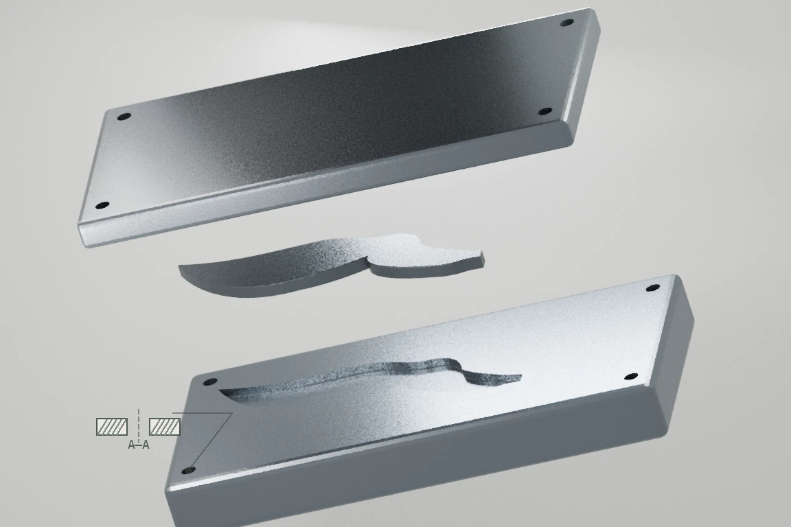
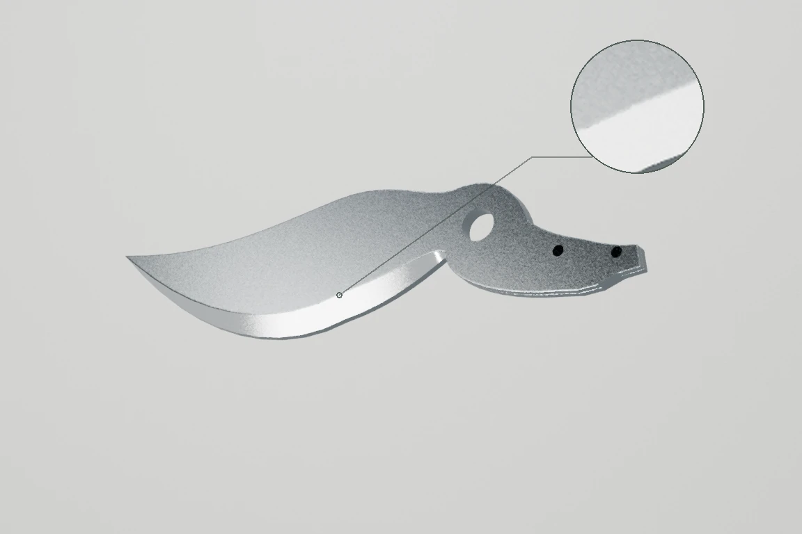

IN ÉÉN KEER GOED
Beheerste OEM-productie maakt van goedgekeurde specificaties herhaalbare serieproductie.

Kan de greep hier iets smaller?Hier ziet u de aangepaste contour.

De geleideboringen hebben hetzelfde referentiepunt.Uw goedgekeurde tekening bepaalt de toleranties.

Staal voor het blad en het materiaal voor de greep.We kopen beide in volgens de afgesproken kwaliteit.

Probeer de greep en het draaipunt.U keurt het monster vóór de productie goed.

De uitlijning van de messen en de veerwerking.We vergelijken beide met uw goedgekeurde monster.

Een kartonnen doos met een inzet van vormpulp.Samen bekijken we de materiaaldocumenten voor uw markt.

Uw artwork en uw verpakking.Samen beoordelen we de drukproef en het ophanggat.
Technisch concept. De goedgekeurde tekening bepaalt de uiteindelijke onderdelen en het productieproces.
De correspondentie en technische aantekeningen zijn voorbeelden. Verpakkingslabels hangen af van het materiaal en de afzetmarkt.
Klantgebonden matrijzen en vertrouwelijkheid
飛庄 · TOBISHO · ARS VS-8XZ · ARS · PDFBeheerste OEM-productie maakt van goedgekeurde specificaties herhaalbare serieproductie.
Flexibele productieplanning vangt wijzigingen in materiaal, oorsprong en levering op.
Het product, het merk en de markt blijven van de klant — niet van ons.
Handgereedschap voor tuin en veld, in de eerste plaats gesmeed en gevormd metaal — gemaakt achter de merken van anderen. Geen elektrisch gereedschap, niet wat toevallig in de mode is, en nooit een eigen winkelmerk. Dat is het hele bedrijf.